24 - Web Analytics#
🏄 Avant de Commencer#
Et pour finir, Google Analytics ! Ca y est, notre site est en ligne, fidèle à notre maquette, elle même construite sur une base solide de recherche utilisateur. Mais qu’en est-il en vrai, qui sont nos utilisateurs réels, qui achète nos produits et qui abandonne en chemin, pourquoi ? Autant d’infos qu’on va voire comment récupérer dans le cours d’aujourd’hui !
Informations
✍ - Vincent
🚧 - En cours
🔨 - 13/08/2025
🕑 - 20 - 30 min
Objectifs Pédagogiques
Sommaire
🌐 Web Analytics ?
🕸️ Notre Besoin
💻 KPIs
🛒 Les Outils
💑 La Méthode
Activité A
Activité A
Liens : 🎓 Dev-Web Intégrer
Syllabus
Module 24: Gérer le trafic de son site web via Google Analytics
Objectif global:
L’objectif global est que l’apprenant sache comment gérer et analyser le trafic de son site web
Plan de cours:
I. L’audience d’un site internet
Comprendre les statistiques d’un site internet
Créer un compte et installer Google Analytics sur son site
II. L’analyse d’audience via Google Analytics
Présentation globale de Google Analytics - Les rapports
Présentation globale de Google Analytics - Les pages annexes
Configuration avancée de Google Analytics
Configuration avancée des rapports Google Analytics
III. La stratégie d’amélioration d’audience
Acquisition
Comportements
Conversion
Outils marketing avancés
Livrables:
Mettre en place un outil d’analyse de son site
Support de Cours
A venir
Prérequis
Etre sur qu’ils ont déja télécharger le plugin GA sur wordpress en amont de la session et qu’ils ont exploré les sites de chacuns.
🧠 La Théorie#
📊 Web Analytics ?#
Définition#
Le Web Analytics, c’est l’art de mesurer, collecter et analyser les données d’un site web, dans le but de comprendre le comportement des utilisateurs, optimiser l’expérience client et maximiser la performance digitale.
Les Données Web#
Une Information#
Il en existe deux grandes catégories !
🍪 Essentiels
👉 Ils sont indispensables au bon fonctionnement du site.
Sans eux, certaines fonctionnalités de base ne marcheraient pas.
✅ Pas de consentement requis, car :
ils ne servent pas à suivre l’utilisateur à des fins commerciales
ils sont strictement techniques
🍪 Optionnels
👉 Ils ne sont pas essentiels au fonctionnement du site, mais …
servent à analyser, personnaliser ou faire de la publicité.
❌ Ils ne peuvent être déposés qu’avec l’accord explicite de l’utilisateur, car :
ils permettent de suivre le comportement de navigation
ils peuvent être partagés avec des tiers
Histoire#
{kind=link}
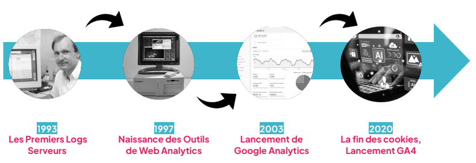
Figure issue du cours de Chiara (CDP2)#
🤔 ...
Le monsieur tout à gauche, il vous fait pas penser à quelqu'un qu'on a déja vu ?
Tim Berners Lee.
L'inventeur du World Wide Web lui même !
Les outils d'analyse de performance sont aussi vieux que le web lui même !
Et cette définition, ca vous fait pas penser à autre chose ?
La Veille !
Deux méthode de récoltes et d'analyse de l'information mais avec des objectifs très différents !
En savoir plus
To do
To do
Lancement de Google Analytics
To do
Fin des cookies (GA4)
To do
Tendences actuelles#
La protection des données#
Note
Faire le liens vers le cours de RGPD
Les Données Web#
Note
Grid 2 avec différence entre qalitatif (Test utilisateur) et quantitatif.
Confirmer que nos utilisateurs sont bien ceux que l’on a ciblé
Parcours d’achat#
Note
Utiliser cette section comme mis en pratique, le parcours d’achat idéal !
Un apprenant (dont le site wordpress est le plus avancé) créé un parcours d’achat idéqlisé qu’il note sur un papier.
Les autres font un test caché.
On analyse ensemble les résultats et comment il peut être optimisé.
Test utilisateurs mais beaucoup plus poussés et surtout sur une version définitive de notre site.
Note
Exercice de reprise des tests utilisateurs et de définir des KPI en lien avec les changements qui ont été effectués.
Vos Utilisateurs#
Petits Rappels#
Note
Gride avec lien vers cours en question
Une version idéalisé jusqu'ici !
Notre Besoin#
Note
Se baser sur le chapitre précédent pour bien définir le besoin de données (ie le minimum nécéssaire)
Comprendre les Attentes du Consommateurs
Dans les différentes étapes de son parcours d’achat (qui je vous le rappelle se présente sous la forme suivante) :
{kind=link}
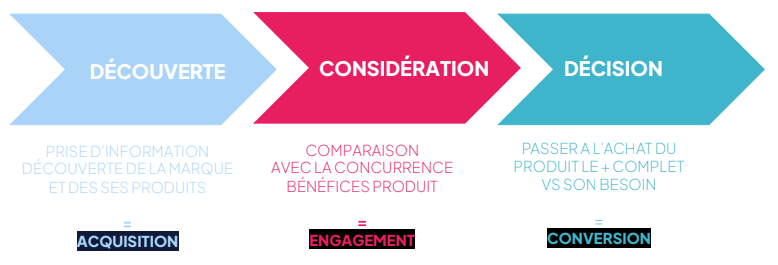
Figure issue du cours de Chiara (CDP2)#
Acquisition#
D'où viennent nos visiteurs ?
Objectifs : Identifier les canaux qui génèrent le plus de trafic et de valeur
“Attirer du monde, c’est bien. Mais attirer le bon public, c’est mieux.”
Engagement#
Comprendre les comportements des visiteurs
Objectifs : Identifier les comportements qui traduisent un réel intérêt
“Un visiteur qui clique et repart, c’est comme un client qui entre dans un magasin sans rien regarder. L’engagement, c’est ce qui prouve qu’il est réellement intéressé.”
Evenements#
Quelles actions sont effectués par les visiteurs
Objectifs : Comprendre les actions précises effectuées par l’utilisateur
Dans GA4, on ne parle plus seulement de pages vues, mais d’événements. Chaque action compte : clics, scrolls, visionnage de vidéos… Tout devient mesurable.”
Conversion#
Qu'est-ce qui a déclenché l'achat
Objectifs : Comprendre ce qui transforme un visiteur en client
« Le but ultime n’est pas d’avoir du trafic, mais des conversions. GA4 permet de mesurer chaque étape du tunnel d’achat pour optimiser le parcours.”
Retention#
Les Clients reviennent-ils ?
Objectifs : Comprendre ce qui incite un utilisateur à revenir régulièrement
Attirer un client coûte cher. Le fidéliser est souvent plus rentable.
KPIs#
Key Performance Indicators !
Un concept extremement important !
Note
Lister les KPIs les plus importants dans le cadre d’un projet e-commerce.
Les Outils#
On l’a vu, récolter des données est primordial pour l’amélioration continu de notre service
DIY ?#
Note
Donner un exemple avec mon module Storyline et comment j’ai enregistré le taux de participation de mon module
C'est Compliqué ...
Google Analytics#
GA4
Pourquoi faire ?#
Récolter des données quantitatives
Note
Présentation de l’interface, capture d’écran
Comprendre ...
Utilisateurs / Sessions#
Evenement#
Comment ça marche#
Note
Système de tag
Google Analytics#
Note
Le Mastodonte
Les Fondamentaux#
Se Lancer !#
La première étape consiste à arriver sur le site de Google Analytics (ce qui n’est déjà pas une chose facile)
{kind=link}
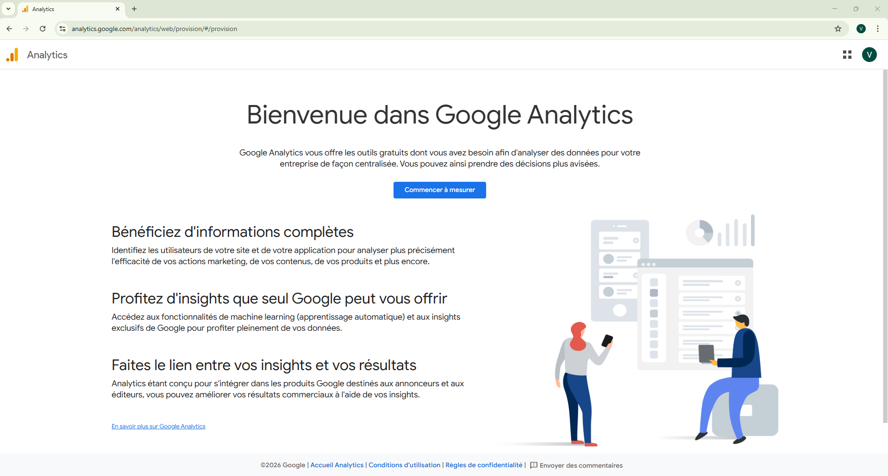
L’arrivée sur site.#
Warning
Il est possible qu’en tapant Google Analytics dans la barre de recherche Google vous arriviez sur la page de TagManager (cf exemple ci-dessous). Si la page sur laquel vous arrivez ressemble à celle ci-dessus, tout est bon, vous pouvez cliquer sur le gros bouton bleu, pour continuer votre onboarding !
{kind=link}
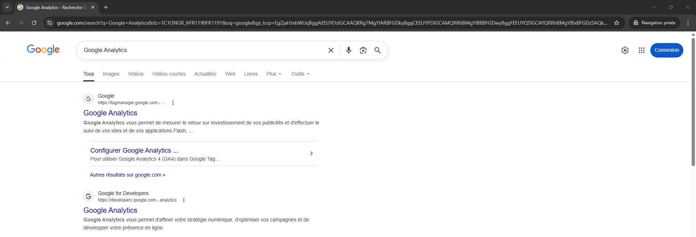
L’arrivée sur site.#
Si vous avez du mal à trouver les site en question, rentrez l’url suivante dans votre navigateur
https://analytics.google.com/
Maintenant qu’on est arrivé sur le site. Créons notre compte Google Analytics
{kind=link}
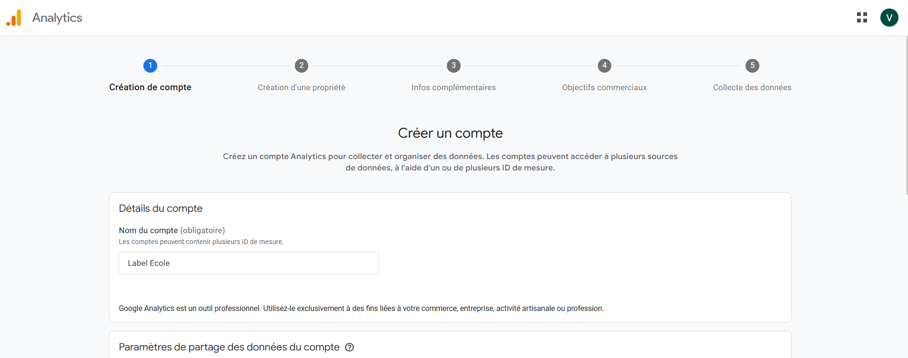
Creation du compte 1#
{kind=link}
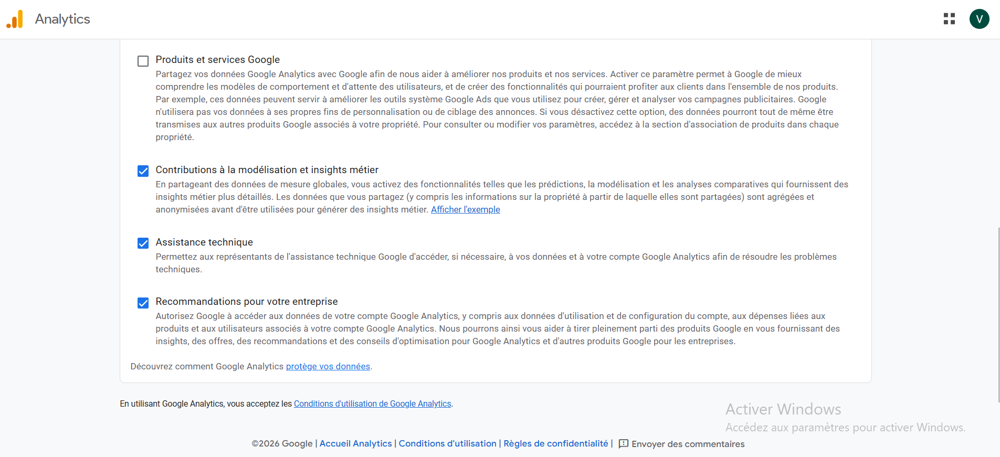
Creation du compte 1.b#
{kind=link}
{kind=link}
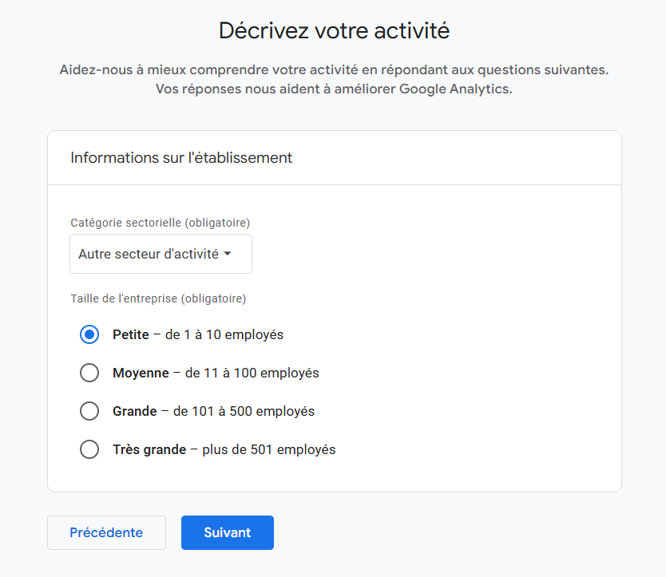
Creation d’une propriété 2#
{kind=link}
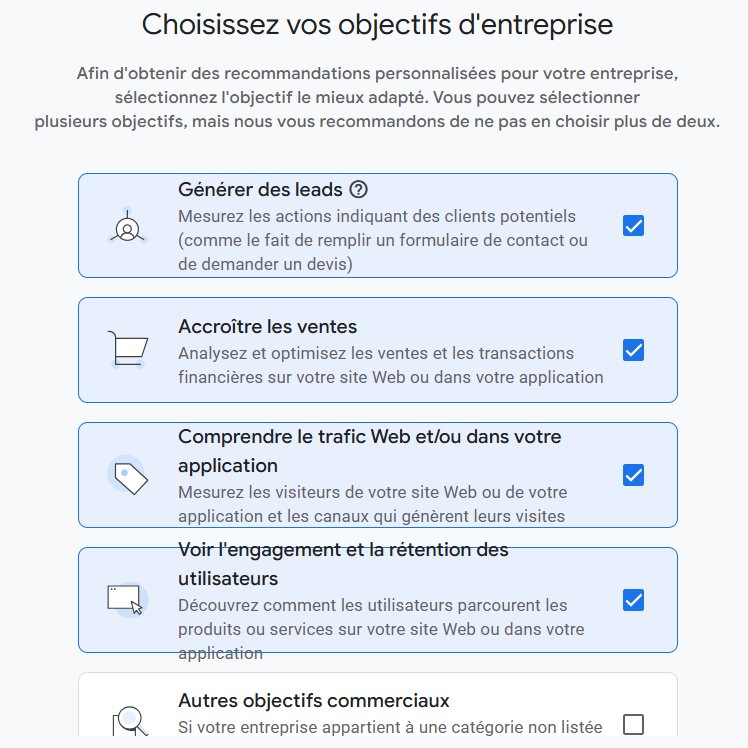
Creation d’une propriété 2#
{kind=link}
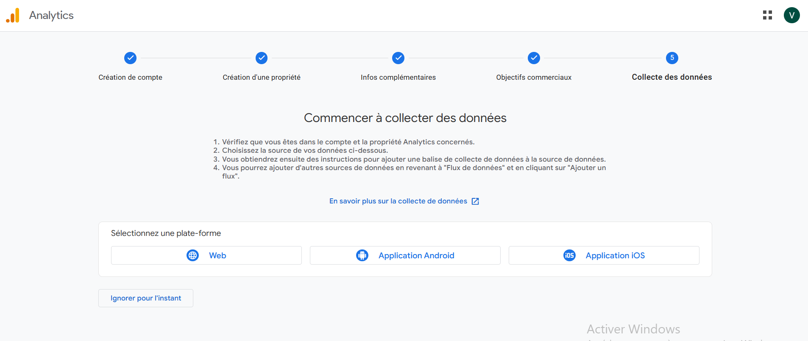
Creation d’une propriété 2#
{kind=link}
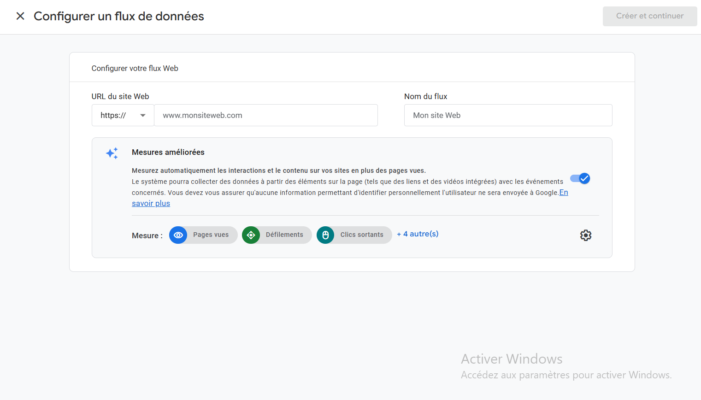
Creation d’une propriété 2#
{kind=link}
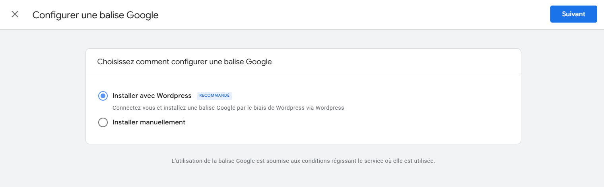
Creation d’une propriété 2#
{kind=link}
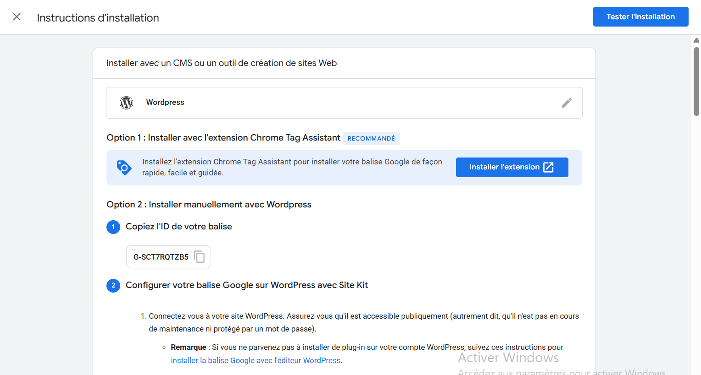
Creation d’une propriété 2#
{kind=link}
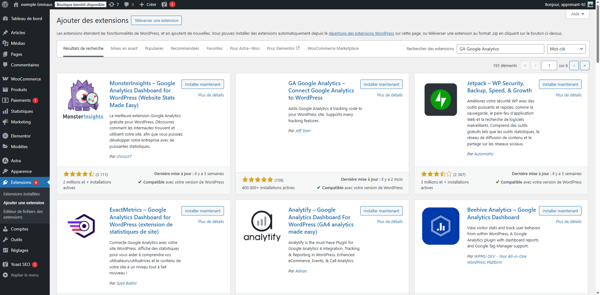
Chercher et trouver l’extension#
Cliquez sur Installer puis Activer l’extension
{kind=link}
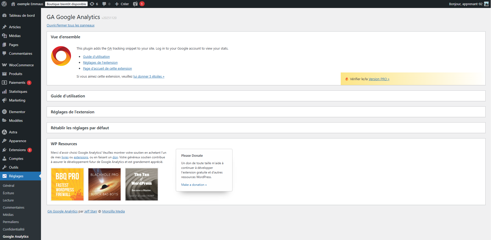
Ouvrir l’extension#
{kind=link}
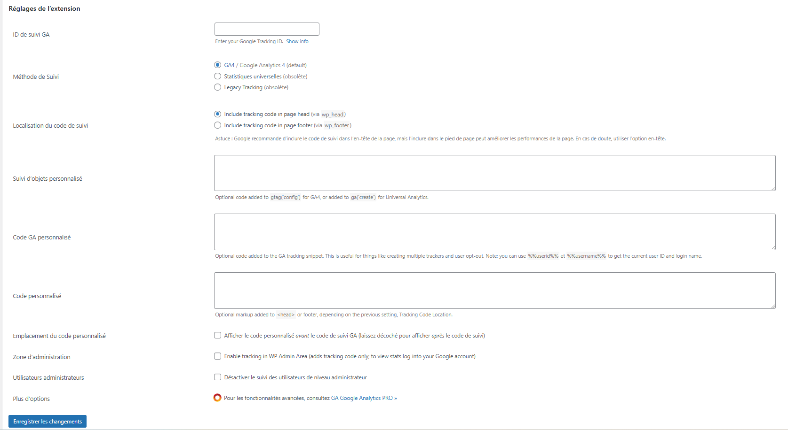
Rentrer les informations nécessaires !#
Rentrer les informations, et normalement tout est bon
L’interface#
Note
Capture d’écran de l’interface !
Problèmes#
Note
Expliquer les différents problèmes de google
Traitement, partage et utilisation des données personelles.
Alternatives#
Un Benchmark#
Synthèse#
Aller plus loin#
Note
Explorer d’autres options, alternatives à google analytics (un peu moins GAFAM)
💪 Mise En Pratique#
Note
Quelles activités ?
check trello
📈 Pour Finir#
Conclusion#
Note
Conclusion plus fiche résumé (production collaborative ? Framanote ?) - produire un pdf exportable
Test#
Tes Connaissances#
Note
Créer un grand Storyline pour ajouter un questionnaire a chaque cours, enregistre la progression de l’apprenant et offre une collection de badge !!
Ton Projet#
Dossier Projet
Livrable 1
Présentation Canva
Livrable 1
Sources#
Glossaire
Note
termes du glossaire
Liste Figures
Note
Référencer les figures de la page ?
Plus de Ressources#
Note
Bon outil pour tester l’utilisation des cookies et les failles de sécurités !
Commentaires#
Note
Lien vers formulaire de feedback + possibilité de donner son avis dans les commentaires.
Comment ça fonctionne ?#
En Bref
Tags
Note
Trouver un schéma explicatif et faire le lien vers le cours initiation au web et e-commerce
Vidéo Explicative (et test)
On se fait un petit test ?
On vient de voire en détail le fonctionnement d’un cookie. La vidéo ci-dessous réintroduit le concept de manière plus synthétique (et en anglais). Commencez à regarder la vidéo sur ce site, puis cliquez sur le logo Youtube afin de continuer la lecture sur Youtube.